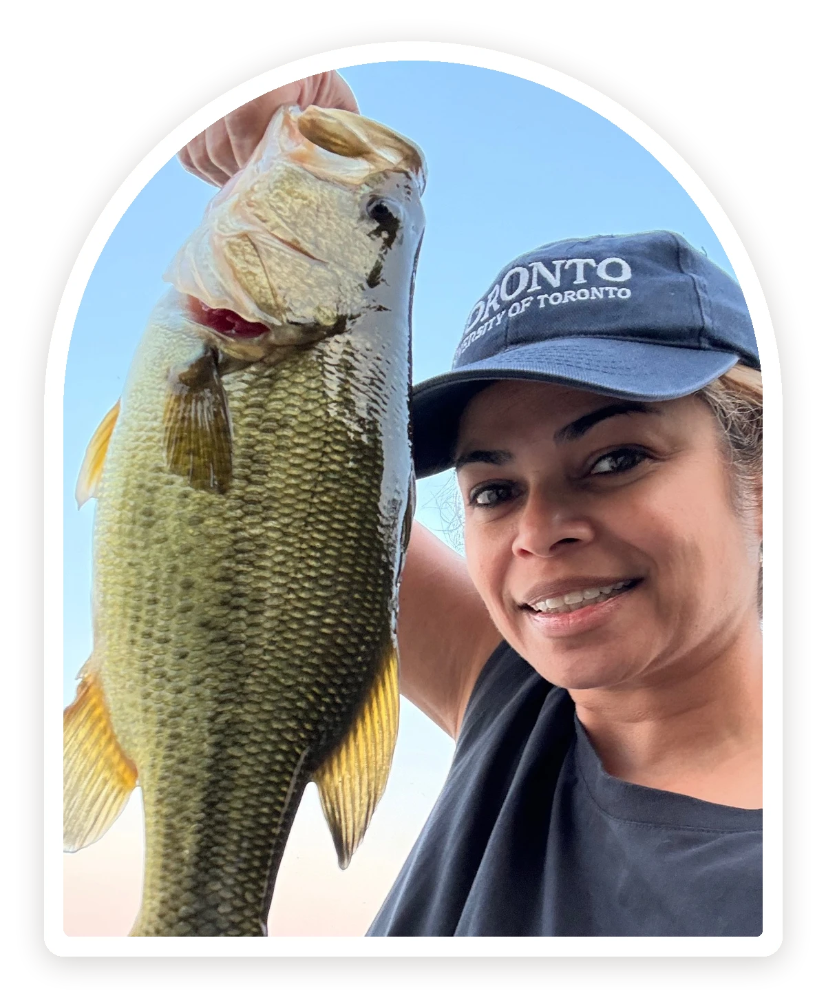

Before 2007
Engineering roots
Web developer, then UI developer building GUI components and design guidelines for engineering software, then software engineer on Siebel/Oracle's CRM OnDemand.
About
I studied computer science at the University of Toronto and started out writing code, including on Siebel's CRM. Along the way I realized I cared most about the people on the other side of the screen. Twenty years of design later, I still think like an engineer, and it's why I partner so well with Product and Engineering.
Anyone who knows me knows I love fishing, I've been a huge Toronto Raptors fan since 1995 and now a Toronto Tempo fan, and I love spending time with my family, especially on vacation somewhere warm and sunny.

Career
From writing code to leading design teams, always caring most about the people on the other side of the screen.
Web developer, then UI developer building GUI components and design guidelines for engineering software, then software engineer on Siebel/Oracle's CRM OnDemand.
Led UI design for the InterCall Unified Meeting online conferencing product, from inception to delivery across three countries.
Hired and managed designers across North America and China for the outdoors platform: camping reservations, permits, and hunting and fishing licenses for 20+ US states and several Canadian provinces, customer-facing and back office.
Built the design practice for Network; design advisor and designer on Andi, Veeva's AI next-best-action app (2019); founding team for Engage.
CRM Platform, then Senior Design Manager for Sales Hub, doing what I love most: scaling teams, growing designers, and leading the team through designing for AI and with AI.
Before I decide what my team should build, I look at what leadership is saying, how the company is funded and run (private equity, scale-up, or public), and where the industry is heading. I keep a wide network for the same reason. It lets me anticipate where the business is going, so my team is ready before the roadmap catches up.
I believe in work-life balance, and family comes first. I'm deeply invested in my kids, now in university and senior year. When I'm not designing, I'm singing, writing songs, playing piano or guitar, fishing, or cooking for the people I love.
Outside the day job
I founded DI&B Meetups for the product groups I last led at HubSpot, a voluntary ritual open to everyone in the groups: engineers, designers, researchers, data analysts, and more. I curated the content, or invited my group lead partners to, for people to explore async or in person and then discuss together, on topics like Indigenous land rights, inclusive communication, and ethics in AI. Nobody had to come; people kept coming because they enjoyed it.
I also volunteered as a mentor through HubSpot's Women in Product program and in the wider design community, and guest lectured in Humber College's UX program for several semesters.
I build with AI tools every week (Claude Code, Lovable, Figma) because I can't lead a team through change I haven't tried myself. And I'm always learning: I follow podcasts on AI and UX covering tooling, how to show the value of AI experiences to drive adoption, and how to use AI evals to establish quality.
Education and certifications